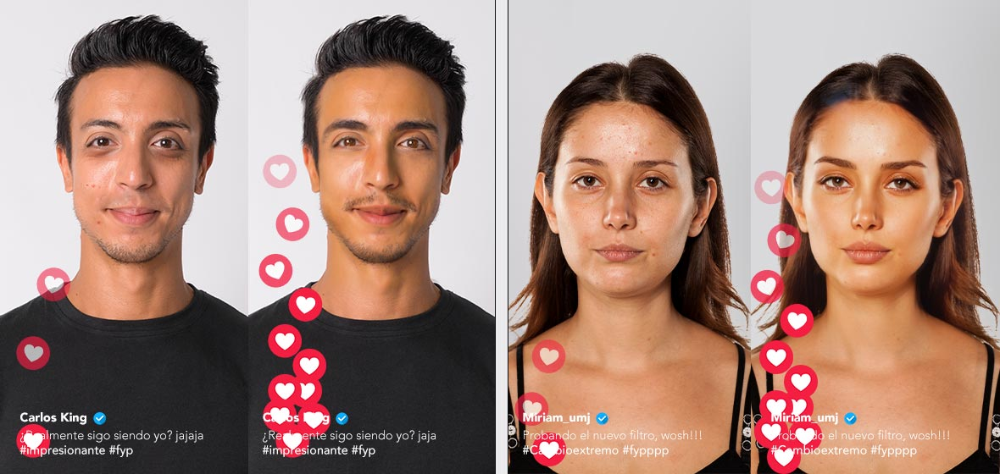

Como el uso de filtros y edición en las redes sociales afectan a como nos vemos a nosotros mismos y a los demás
Hoy en día, el uso de filtros en redes sociales es casi inseparable de ellas. Abrimos Instagram y, al ver la primera historia, es muy probable que encontremos una foto con un filtro que mejora la iluminación, aclara la piel o disimula imperfecciones. Pero no siempre fue así. En un principio, las redes solo permitían interactuar por texto. Con el avance de la tecnología, se incorporaron imágenes y videos, e incluso surgieron plataformas dedicadas exclusivamente a la fotografía, como Pinterest. Esto abrió una nueva puerta: conocer a las personas no solo por lo que dicen, sino también por su apariencia. Y así como, al conocer a alguien, solemos mostrar nuestra mejor faceta, también empezamos a mostrar la mejor versión de cómo nos vemos. Hoy, el uso de filtros es prácticamente un estándar, pero también un arma de doble filo. Por un lado, proyectamos la imagen que queremos que los demás vean; por otro, creamos una representación de nosotros mismos que es solo parcialmente real. Lo mismo ocurre cuando observamos a otros: nuestra percepción de ellos puede estar alejada de su apariencia real. En la búsqueda de aprobación y de cumplir con estándares de belleza artificiales, corremos el riesgo de dañar nuestra autoestima, comparándonos con versiones editadas y no con la realidad.

Volver a la pagina prncipal